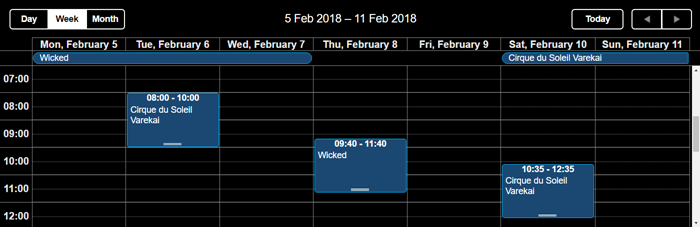

Accessibility
Accessibility is an important and necessary standard for modern web applications. There's a set of various techniques that allow making an application or a web site handier to use or work with.
To make an easier access and interaction with DHTMLXScheduler for people with disabilities, the component contains a set of accessibility features:
- WAI-ARIA Attributes
- Keyboard Navigation
- High-Contrast Themes
WAI-ARIA Attributes
DHTMLXScheduler provides WAI-ARIA support that implies the use of special attributes in the component's markup. These are additional attributes which make the component recognizable for screen readers.
You can find more information in the official specification of WAI-ARIA.
WAI-ARIA attributes in Scheduler are enabled by default. If needed, you can disable them by using use the wai_aria_attributes property with the false value:
scheduler.config.wai_aria_attributes = false;
It is also possible to switch on/off the application of the role="application" attribute for the main scheduler container and minicalendar elements via the wai_aria_application_role property. It is set to true by default.
scheduler.config.wai_aria_application_role = false;
Keyboard Navigation
This technique implies providing access to all functionality of an application via the corresponding keys and key combinations instead of navigating through an application with a mouse pointer.
You will find the detailed information in the Keyboard Navigation article.
High-Contrast Themes
DHTMLXScheduler supports a theme that uses contrasting colors which make the app's interface more distinct and easier to see. The high-contrast theme will be helpful for people with special or particular visual needs.
There are two variants of contrast theme available:
- contrast black skin

<link rel="stylesheet" href="../../codebase/dhtmlxscheduler_contrast_black.css">Related sample: High contrast theme - Black
- contrast white skin

<link rel="stylesheet" href="../../codebase/dhtmlxscheduler_contrast_white.css">Related sample: High contrast theme - White
Back to top